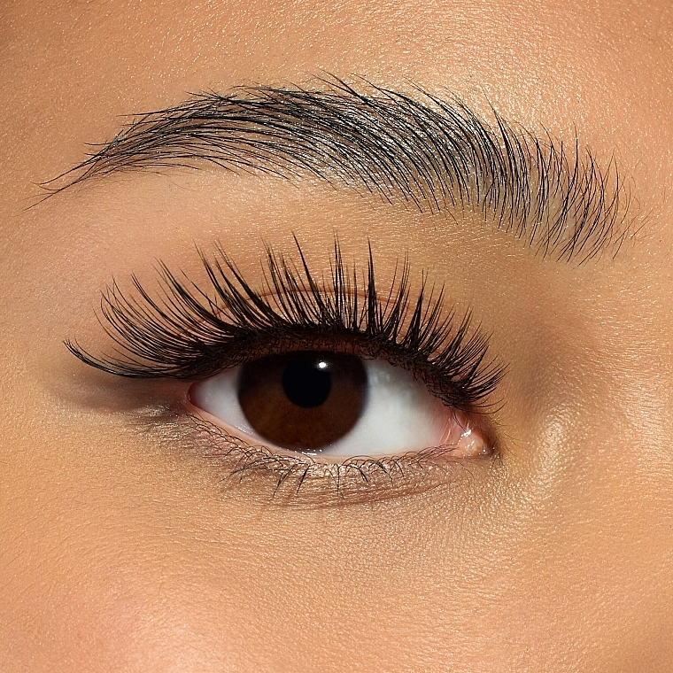

Нарощування вій: тренди та поради
Нарощування вій — це не тільки спосіб зробити погляд виразнішим, але й можливість підкреслити вашу природну красу. У 2024 році модними є як класичні, так і об'ємні нарощення.
Ми пропонуємо різні варіанти нарощування, підбираючи стиль, який ідеально підходить для вашого обличчя та вигляду. Наші фахівці створять ідеальний погляд без шкоди для здоров'я ваших природних вій.
Як вибрати правильний стиль нарощування?
Для природного вигляду обирайте класичне нарощування, яке додає довжину кожній війці. Якщо хочете більш об'ємний погляд, підійде об'ємне нарощування, яке створює ефект густих та розкішних вій. Ми також пропонуємо варіанти для особливих випадків, коли потрібно досягти максимально виразного вигляду.
Догляд за нарощеними віями
Щоб ваші вії залишалися красивими та природними, важливо дотримуватись рекомендацій по догляду. Не використовуйте олійні засоби для зняття макіяжу, уникайте сильного тертя та водяних процедур, щоб подовжити термін служби ваших вій.